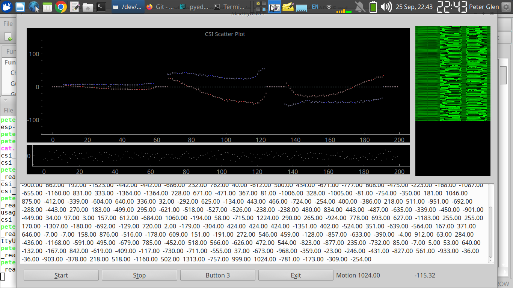

ESP-CSI
The main purpose of this project is to show the use of ESP-WIFI-CSI. The human body detection algorithm is still being optimized. You can get more accurate results through machine learning, neural network and other algorithms based on the original CSI data.
Screenshots:

1 Introduction
1.1 Introduction to CSI
Channel state information (CSI) includes specific indicators such as carrier signal strength, amplitude, phase, and signal delay. These indicators reveal the signal scattering, reflection, and power attenuation phenomena that occur with the carrier as the transmission distance changes. It can be used to measure the channel status of the wireless network in Wi-Fi communication. By analyzing and studying the changes in CSI, we can conversely speculate on the changes in the physical environment that cause the changes in the channel state, that is, to achieve non-contact intelligent sensing. CSI is extremely sensitive to environmental changes. In addition to perceiving environmental changes caused by large movements such as walking and running of people or animals, it can also capture subtle movements caused by small movements such as breathing and chewing of people or animals in a static environment.
1.2 The relationship between CSI and RSSI
Level of detail: CSI provides more detailed information about the wireless channel, including amplitude, phase, and frequency response. RSSI, on the other hand, only provides a general measurement of signal strength.
Applications: Wi-Fi CSI is particularly useful for advanced applications that require fine-grained analysis of the wireless channel, such as indoor localization, gesture recognition, and activity detection. RSSI is commonly used for basic tasks like signal strength estimation and basic proximity-based applications.
Accuracy: CSI can offer higher accuracy in certain applications compared to RSSI. It allows for more precise localization and tracking, as well as better differentiation between different actions or gestures.
Hardware support: Both CSI and RSSI can be obtained from standard Wi-Fi receivers, but CSI requires more advanced hardware capabilities to capture and process the detailed channel information. RSSI, being a simpler measurement, can be obtained with most Wi-Fi receivers.
In summary, Wi-Fi CSI provides more detailed and fine-grained information about the wireless channel, while RSSI is a simpler measurement of signal strength. CSI enables more advanced applications but requires more sophisticated hardware and analysis techniques.
1.3 Advantages of CSI
CSI is a physical layer characteristic.Compared with other indicators, CSI amplitude shows some advantages:
- Anti-interference: CSI amplitude is essentially the attenuation coefficient of a set of channels. As long as the channel itself does not change, it is quite robust to interference from power adaptors and other jumpers.
- More fine-grained: CSI does not use synthetic values (such as RSSI) to measure the channel, but decomposes the entire channel measurement into sub-carriers, and estimates the frequency response of each sub-carrier, so as to determine the channel in the frequency domain. Make a more fine-grained description.
1.4 Espressif CSI Advantage
- All ESP32 series support CSI: ESP32 / ESP32-S2 / ESP32-C3 / ESP32-S3 / ESP32-C6.
- Powerful ecology: Espressif is a global leader in the field of Wi-Fi MCUs, combining CSI with existing IOT equipment.
- More information: Such as RSSI, RF noise floor, reception time and
antenna
rx_ctrlfield. - Bluetooth Assist: ESP32 also supports BLE, for example, it can scan surrounding devices to assist detection.
- Powerful processing capability: ESP32 CPU handles dual-core, 240MHz, AI instructions. Can run machine learning and neural networks.
2 CSI Application
2.1 Intruder detection
Select high-sensitivity sub-carrier combinations and signals from non-line-of-sight path directions in different multipath propagation environments, thereby enhancing the sensitivity of passive person detection and expanding the detection range. This method can form "no blind spot" intruder detection in security applications. The multipath propagation characteristics of wireless signals indoors make wireless perception have natural advantages in sensing range and directionality.
2.2 Positioning and ranging
You can learn from the RSSI method and use CSI as a more informative fingerprint (including information on signal amplitude and phase on multiple subcarriers), or rely on a frequency selective attenuation model for more accurate ranging.
2.3 Human activity detection and recognition
Use CSI's high sensitivity to environmental changes to recognize human movements, gestures, breathing and other small movements and daily activities.
3 Getting Started
The Getting Started project can be found in the examples/console_test directory. It will help you build a human activity detection application. See: README.
4 How to get CSI
4.1 Get router CSI

- How to implement: ESP32 sends a Ping packet to the router, and receives the CSI information carried in the Ping Replay returned by the router.
- Advantage: Only one ESP32 plus router can be completed.
- Disadvantages: Depends on the router, such as the location of the router, the supported Wi-Fi protocol, etc.
- Applicable scenario: There is only one ESP32 in the environment, and there is a router in the detection environment.
4.2 Get CSI between devices

- How to implement: ESP32 A and B both send Ping packets to the router, and ESP32 A receives the CSI information carried in the Ping Replay returned by ESP32 B, which is a supplement to the first detection scenario.
- Advantage: Does not depend on the location of the router, and is not affected by other devices connected under the router.
- Disadvantage: Depends on the Wi-Fi protocol supported by the router, environment.
- Applicable scenario: There must be more than two ESP32s in the environment.
4.3 Get CSI specific devices

- How to implement: The packet sending device continuously switches channels to send out packets. ESP32 A, B, and C all obtain the CSI information carried in the broadcast packet of the packet sending device. This method has the highest detection accuracy and reliability.
- Advantages: The completion is not affected by the router, and the detection accuracy is high. When there are multiple devices in the environment, only one packet sending device will cause little interference to the network environment.
- Disadvantages: In addition to the ordinary ESP32, it is also necessary to add a special package issuing equipment, the cost is the same and higher.
- Applicable scenarios: Suitable for scenarios that require high accuracy and multi-device cluster positioning.
5 Note
- The effect of external IPEX antenna is better than PCB antenna, PCB antenna has directivity.
- Test in an unmanned environment. Avoid the influence of other people's activities on test results.
6 Related resources
- ESP-IDF Programming Guide is the documentation for the Espressif IoT development framework.
- ESP-WIFI-CSI Guide is the use of ESP-WIFI-CSI Description.
- If you find a bug or have a feature request, you can submit it on Issues on GitHub. Please check to see if your question already exists in the existing Issues before submitting it.